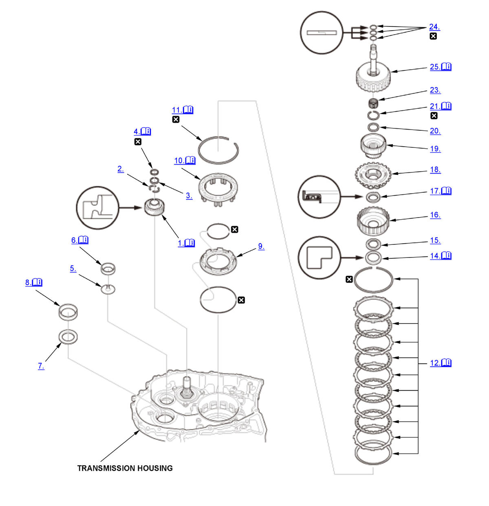
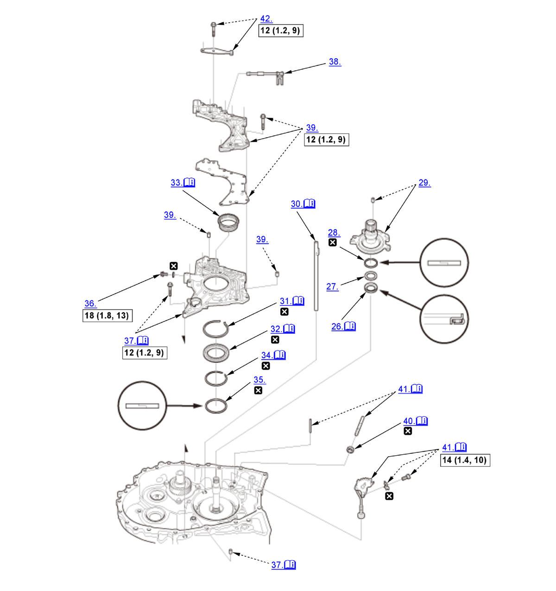
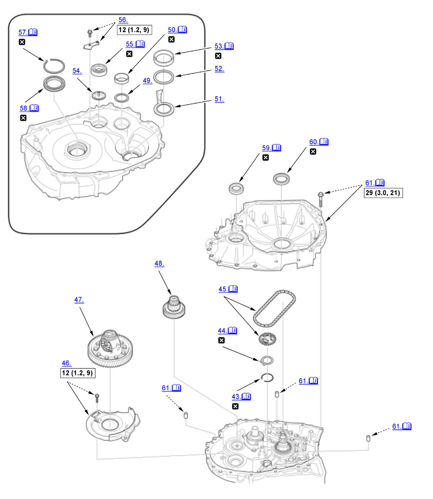
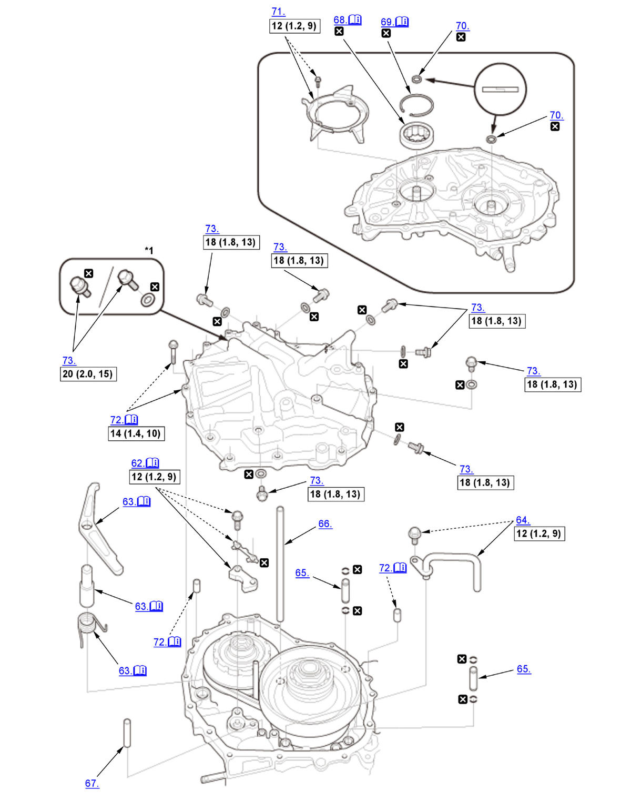
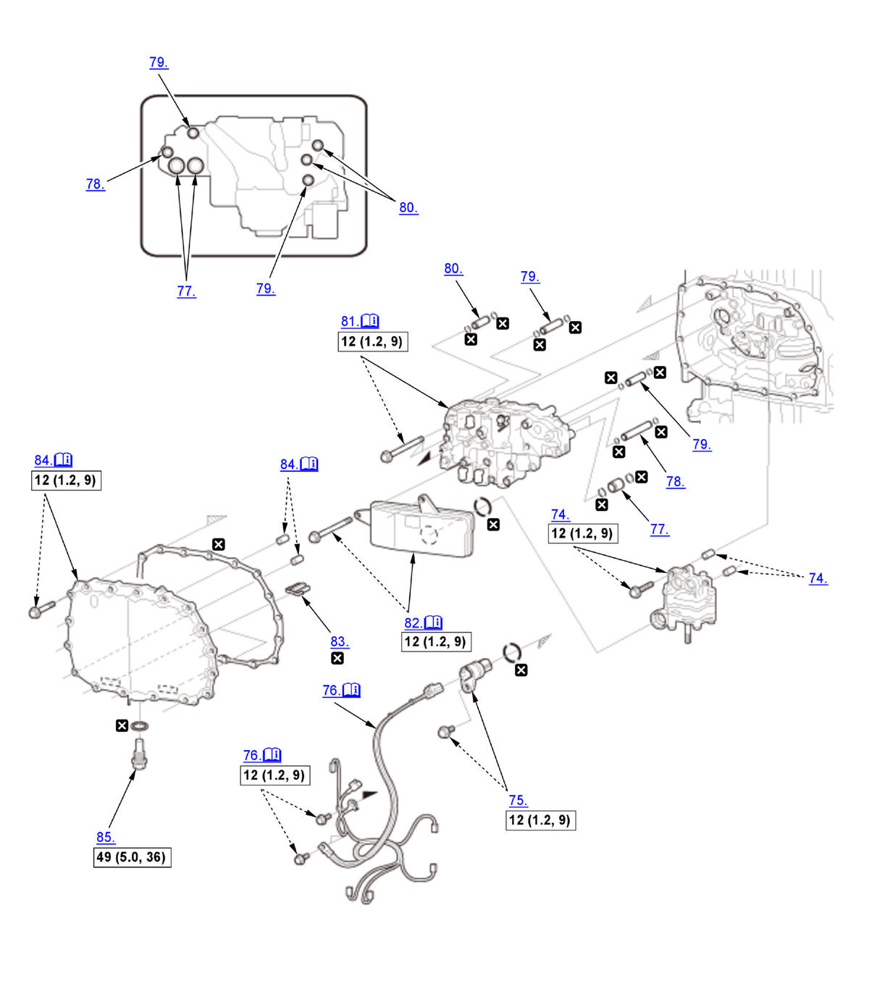
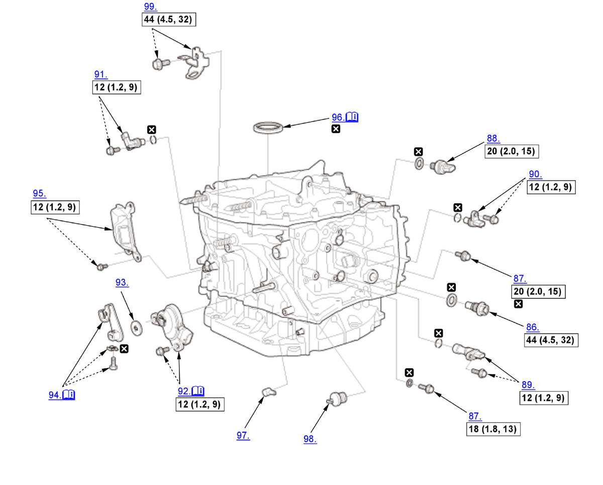

CVT Transmission Disassembly and Reassembly (K20C2 (CVT)): Reassembly: Procedure
Numbered call-outs in figure pertain to list numbers in following procedure.

Courtesy of HONDA, U.S.A., INC. |
Detailed information, notes and precautions |
 |
Replace |
Numbered call-outs in figure pertain to list numbers in following procedure.

Courtesy of HONDA, U.S.A., INC. |
Detailed information, notes and precautions |
 |
Torque: N.m (kgf.m, lbf.ft) |
|
Replace |
Numbered call-outs in figure pertain to list numbers in following procedure.

Courtesy of HONDA, U.S.A., INC. |
Detailed information, notes and precautions |
|
Torque: N.m (kgf.m, lbf.ft) |
|
Replace |
Numbered call-outs in figure pertain to list numbers in following procedure.

Courtesy of HONDA, U.S.A., INC. |
Detailed information, notes and precautions |
|
Torque: N.m (kgf.m, lbf.ft) |
|
Replace |
| *1 | Selective use
|
Numbered call-outs in figure pertain to list numbers in following procedure.

Courtesy of HONDA, U.S.A., INC. |
Detailed information, notes and precautions |
|
Torque: N.m (kgf.m, lbf.ft) |
|
Replace |
Numbered call-outs in figure pertain to list numbers in following procedure.

Courtesy of HONDA, U.S.A., INC. |
Detailed information, notes and precautions |
|
Torque: N.m (kgf.m, lbf.ft) |
|
Replace |
- Secondary Drive Gear - Install
1. Install the secondary drive gear (A) as shown using the 40 mm I.D. driver handle and the 30 mm I.D. bearing driver attachment. - 25.5 mm Cotter - Install
- Cotter Retainer - Install
- Snap Ring - Install
1. Install the snap ring (A) using the snap ring pliers.
NOTE:- Be careful not to deform the snap ring by opening/closing it excessively.
- Make sure the snap ring is firmly installed in the groove.
- Oil Guide Plate - Install
- Final Drive Shaft Tapered Roller Bearing Outer Race (Transmission Housing Side) - Install
1. Install the final drive shaft tapered roller bearing outer race (A) until it bottoms using the 40 mm I.D. driver handle. - Spacer - Install
- Differential Carrier Tapered Roller Bearing Outer Race (Transmission Housing Side) - Install
1. Install the differential carrier tapered roller bearing outer race (A) until it bottoms using the 15 x 135L driver handle and the 62 x 64 mm bearing driver attachment. - Reverse Brake Piston - Install
- Spring Retainer/Return Spring Assembly - Install
1. Install the spring retainer/return spring assembly (A) by aligning their holes (B) with the bosses (C). - Snap Ring - Install
1. Put the reverse brake spring compressor attachment (A) on the spring retainer/return spring assembly (B). NOTE: Be sure the attachment is set over the return springs, not on the reverse brake piston (C).
2. Install the reverse brake spring compressor plate (D) with facing the UP mark to the upside using bolts (E).
3. Make sure that the reverse brake spring compressor bolt (F) is properly installed on the dent in the surface of the reverse brake spring compressor attachment.
4. Compress the return springs using the reverse brake spring compressor until the snap ring securing the spring retainer/return spring can be installed.
5. Install the snap ring (G).
- Be careful not to deform the snap ring by opening/closing it excessively.
- Make sure the snap ring is firmly installed in the groove.
6. Remove the reverse brake spring compressor.
- Reverse Brake - Install
1. Install the disc spring (A). NOTE: Be sure to install the disc spring with the indented mark (B) facing the upward.
2. Starting with the reverse brake plate (C), alternately install the reverse brake plates and the reverse brake discs (D).
3. Install the reverse brake end-plate (E) with the flat side toward the top disc.
4. Install the snap ring (F).
- Be careful not to deform the snap ring by opening/closing it excessively.
- Make sure the snap ring is firmly installed in the groove.
- Reverse Brake End-Plate Thrust Clearance - Inspect
1. Set a dial indicator (A) on the reverse brake end-plate (B).
2. Zero the dial indicator with the reverse brake end-plate is lifted up to the snap ring (C).
3. Release the reverse brake end-plate.
4. Put the clutch compressor attachment and the 64 mm clutch compressor attachment on the reverse brake end-plate.
5. Press the clutch compressor attachment down with 39.2 N (4.00 kgf, 8.81 lbf) (the weight of the clutch compressor attachment is included) using a force gauge, and read the dial indicator.
6. The dial indicator reads the clearance (D) between the reverse brake end-plate and the top disc (E). Take measurements in at least three places, and use the average as the actual clearance.
Standard: 1.0-1.2 mm (0.039-0.047 in) 7. If the clearance is out of the standard, remove the reverse brake end-plate and select a suitable one.
Reverse Brake End-Plate
No. Thickness 1 3.6 mm (0.142 in) 2 3.7 mm (0.146 in) 3 3.8 mm (0.150 in) 4 3.9 mm (0.154 in) 5 4.0 mm (0.157 in) 6 4.1 mm (0.161 in) 7 4.2 mm (0.165 in) 8 4.3 mm (0.169 in) 9 4.4 mm (0.173 in) 10 4.5 mm (0.177 in) 11 4.6 mm (0.181 in) 12 4.7 mm (0.185 in) 13 4.8 mm (0.189 in) 14 4.9 mm (0.193 in) 15 5.0 mm (0.197 in) 8. Install a selected reverse brake end-plate, then recheck the clearance.
- 40 x 54 x 6 mm Collar - Install
NOTE: Make sure the 40 x 54 x 6 mm collar is installed in the correct direction.
- 33.5 x 53 x 1 mm Thrust Washer - Install
- Ring Gear - Install
- 37 x 53.1 x 3 mm Thrust Needle Bearing - Install
NOTE: Make sure the 37 x 53.1 x 3 mm thrust needle bearing is installed in the correct direction.
- Planetary Carrier - Install
- Sun Gear - Install
- 33 x 40 mm Thrust Shim - Install
- Snap Ring - Install
1. Install the snap ring (A) using the snap ring pliers.
NOTE:- Be careful not to deform the snap ring by opening/closing it excessively.
- Make sure the snap ring is firmly installed in the groove.
- Sun Gear Thrust Clearance - Inspect
1. Set a dial indicator (A) on the sun gear (B).
2. Zero the dial indicator with the sun gear is lifted up to the 33 x 40 mm thrust shim (C) contact the snap ring (D).
3. Release the sun gear.
4. Put the clutch compressor attachment on the sun gear.
5. Press the clutch compressor attachment down with 49 N (5.0 kgf, 11.0 lbf) (the weight of the clutch compressor attachment is included) using a force gauge, and read the dial indicator.
6. The dial indicator reads the clearance (E) between the sun gear and the 33 x 40 mm thrust shim. Take measurements in at least three places, and use the average as the actual clearance.
Standard: 0.04-0.09 mm (0.0016-0.0035 in) 7. If the clearance is out of the standard, remove the 33 x 40 mm thrust shim and select a suitable one.
33 x 40 mm Thrust Shim
No. Thickness 0A 1.16 mm (0.0457 in) 0B 1.19 mm (0.0469 in) 0C 1.22 mm (0.0480 in) 0D 1.25 mm (0.0492 in) 0E 1.28 mm (0.0504 in) A 1.31 mm (0.0516 in) B 1.34 mm (0.0528 in) C 1.37 mm (0.0539 in) No. Thickness D 1.40 mm (0.0551 in) E 1.43 mm (0.0563 in) F 1.46 mm (0.0575 in) G 1.49 mm (0.0587 in) H 1.52 mm (0.0598 in) I 1.55 mm (0.0610 in) J 1.58 mm (0.0622 in) K 1.61 mm (0.0634 in) L 1.64 mm (0.0646 in) M 1.67 mm (0.0657 in) N 1.70 mm (0.0669 in) O 1.73 mm (0.0681 in) P 1.76 mm (0.0693 in) Q 1.79 mm (0.0705 in) R 1.82 mm (0.0717 in) S 1.85 mm (0.0728 in) 8. Install a selected 33 x 40 mm thrust shim, then recheck the clearance.
- 16 x 20 x 16.8 mm Needle Bearing - Install
- 22.2 mm Sealing Ring - Install
- Input Shaft Assembly - Install
1. Install the input shaft (A) by aligning the clutch discs (B) with the sun gear (C), and aligning the clutch guide (D) with the ring gear (E). 2. Measure the depth (A) between the surface of the transmission housing (B) and the clutch guide (C), then make sure the measured value of the depth is within the recorded value when removing. - 26 x 40.8 x 3.2 mm Thrust Needle Bearing - Install
NOTE: Make sure the 26 x 40.8 x 3.2 mm thrust needle bearing is installed in the correct direction.
- 26 x 38.8 mm Thrust Shim - Install
- 42.3 mm Sealing Ring - Install
- Stator Shaft - Install
- Lubrication Pipe - Install
NOTE: Be sure to install the lubrication pipe (A) by aligning the guide tab (B) with the guide hole (C).
- Snap Ring - Install
NOTE:
- Be careful not to deform the snap ring by opening/closing it excessively.
- Make sure the snap ring is firmly installed in the groove.
- Transmission Fluid Pump Drive Sprocket Bearing - Install
1. While expanding the snap ring (A) using the snap ring pliers, install the transmission fluid pump drive sprocket bearing (B) as shown.
NOTE:- Be careful not to deform the snap ring by opening/closing it excessively.
- Make sure the snap ring is firmly installed in the groove.
- Transmission Fluid Pump Drive Sprocket - Install
1. Install the transmission fluid pump drive sprocket (A) until it bottoms using the 15 x 135L driver handle and the 52 x 55 mm bearing driver attachment. - Snap Ring - Install
1. Install the snap ring (A) using the snap ring pliers.
NOTE:- Be careful not to deform the snap ring by opening/closing it excessively.
- Make sure the snap ring is firmly installed in the groove.
- 56.7 mm Sealing Ring - Install
- Sealing Bolt - Install
- Stator Shaft Flange - Install
NOTE: Align the holes (A) of the stator shaft flange with the lubrication pipe (B) and the dowel pin (C) when installing the stator shaft flange.
- Manual Valve - Install
- Manual Valve Body - Install
- Control Shaft Oil Seal - Install
1. Install the control shaft oil seal (A) flush with the transmission housing using the 15 x 135L driver handle and the 22 x 24 mm attachment. - Control Shaft and Detent Lever - Install
1. Install the detent lever (A) by aligning the guide tab (B) of the detent lever with the opening (C) of the manual valve. 2. Install the control shaft (D) into the transmission housing and the detent lever, then install the roller (E) to secure the control shaft.
3. Secure the control shaft and the detent lever with the mounting bolt (F) and the lock washer (G).
4. Pry up the lock tab of the lock (H) washer against the bolt head.
- Detent Spring - Install
- Snap Ring - Install
NOTE:
- Be careful not to deform the snap ring by opening/closing it excessively.
- Make sure the snap ring is firmly installed in the groove.
- Snap Ring - Install
NOTE:
- Be careful not to deform the snap ring by opening/closing it excessively.
- Make sure the snap ring is firmly installed in the groove.
- Transmission Fluid Pump Driven Sprocket and Transmission Fluid Pump Drive Chain - Install
1. While expanding the snap ring (A) using the snap ring pliers, install the transmission fluid pump drive sprocket (B) and the transmission fluid pump drive chain (C).
NOTE:- Be careful not to deform the snap ring by opening/closing it excessively.
- Make sure the snap ring is firmly installed in the groove.
- Baffle Plate - Install
- Differential Assembly - Install
- Final Drive Shaft Assembly - Install
- 51 mm Thrust Shim - Install
- Final Drive Shaft Tapered Roller Bearing Outer Race (Torque Converter Housing Side) - Install
1. Install the final drive shaft tapered roller bearing outer race (A) until it bottoms using the 40 mm I.D. driver handle so there is no clearance between the bearing outer race, the 51 mm thrust shim, and the torque converter housing. - Oil Guide Plate - Install
- 68 mm Thrust Shim - Install
- Differential Carrier Tapered Roller Bearing Outer Race (Torque Converter Housing Side) - Install
1. Install the differential carrier bearing outer race (A) until it bottoms using the 15 x 135L driver handle and the 62 x 68 mm bearing driver attachment so there is no clearance between the bearing outer race, the 68 mm thrust shim, the oil guide plate, and the torque converter housing. - Oil Guide Plate - Install
- Driven Pulley Shaft Bearing (Torque Converter Housing Side) - Install
1. Install the driven pulley shaft bearing (A) until it bottoms using the 40 mm I.D. driver handle. - Bearing Set Plate - Install
- Snap Ring - Install
NOTE:
- Be careful not to deform the snap ring by opening/closing it excessively.
- Make sure the snap ring is firmly installed in the groove.
- Input Shaft Bearing - Install
1. While expanding the snap ring (A) using the snap ring pliers, install the torque converter housing bearing (B) as shown.
NOTE:- Be careful not to deform the snap ring by opening/closing it excessively.
- Make sure the snap ring is firmly installed in the groove.
- Right Differential Oil Seal - Install
1. Install the right differential oil seal (A) flush with the torque converter housing using the 65 mm oil seal driver. - Input Shaft Oil Seal - Install
1. Install the input shaft oil seal (A) flush with the torque converter housing using the 15 x 135L driver handle and the 71.5 mm oil seal driver attachment. - Torque Converter Housing - Install
NOTE: Do the following procedure whenever installing the parts. 1. Remove all of the old liquid gasket from the mating surfaces of the transmission housing and the torque converter housing, the bolts, and the bolt holes.
2. Clean and dry the mating surfaces of the transmission housing and the torque converter housing.
3. Apply liquid gasket (Honda Genuine Liquid Gasket 5460H) to the transmission housing surface and to the inside edge of the threaded bolt holes. Install the component within 4 minutes of applying the liquid gasket.
NOTE:
- Apply a 1.5 mm (0.059 in) diameter bead (A) of the liquid gasket along the broken line (B) which is 3.9 mm (0.154 in) (C) from the chamfering surface of the transmission housing inner side.
- Do not apply any liquid gasket to the bolt hole.
- Apply the liquid gasket all around as shown. When the bead is arriving at the end point (D), overlap the liquid gasket for 10-15 mm (0.39-0.59 in) (E).
- The torque converter housing must be installed within 4 minutes. If too much time has passed after applying the liquid gasket, remove the old liquid gasket and residue, then reapply new liquid gasket.
- Do not touch the applied liquid gasket face.
4. Install the torque converter housing with the dowel pins, and tighten the bolts in a crisscross pattern in at least two steps.
NOTE:
- Wait for at least 1 hour before filling the transmission with transmission fluid.
- Do not run the engine for at least 3 hours after installing the torque converter housing.
- Parking Brake Rod Holder - Install
1. Install the parking brake rod holder (A). NOTE: Be sure to install the parking brake rod holder with the letter (B) facing the upward.
2. Pry up the lock tabs (C) of the lock washer (D) against the bolt head.
- Parking Brake Pawl, Parking Shaft, and Parking Pawl Spring - Install
1. Install the parking brake pawl (A) with the parking shaft (B) and the parking pawl spring (C) as shown. - Cooler Pipe - Install
- 10.9 x 48 mm Pipe - Install
- 8 x 244 mm Pipe - Install
- 8 x 52.2 mm Pipe - Install
- Driven Pulley Shaft Bearing (End Cover Side) - Install
1. Install the secondary shaft bearing (A) using the 65 mm oil seal driver. - Snap Ring - Install
1. Install the snap ring (A) using commercially available snap ring pliers (B).
NOTE:- Be careful not to deform the snap ring by opening/closing it excessively.
- Make sure the snap ring is firmly installed in the groove.
- 16 mm Sealing Ring - Install
- End Cover Plate - Install
- End Cover - Install
NOTE: Do the following procedure whenever installing the parts. 1. Remove all of the old liquid gasket from the mating surfaces of the transmission housing and the end cover, the bolts, and the bolt holes.
2. Clean and dry the mating surfaces of the transmission housing and the end cover.
3. Apply liquid gasket (Honda Genuine Liquid Gasket 5460H) to the transmission housing surface and to the inside edge of the threaded bolt holes. Install the component within 4 minutes of applying the liquid gasket.
NOTE:
- Apply a 1.5 mm (0.059 in) diameter bead (A) of the liquid gasket along the broken line (B) which is 3.9 mm (0.154 in) (C) from the chamfering surface of the end cover inner side.
- Do not apply any liquid gasket to the bolt hole.
- Apply the liquid gasket all around as shown. When the bead is arriving at the end point (D), overlap the liquid gasket for 10-15 mm (0.39-0.59 in) (E).
- The end cover must be installed within 4 minutes. If too much time has passed after applying the liquid gasket, remove the old liquid gasket and residue, then reapply new liquid gasket.
- Do not touch the applied liquid gasket face.
4. Install the end cover with the dowel pins, and tighten the bolts in a crisscross pattern in at least two steps.
NOTE:
- Wait for at least 1 hour before filling the transmission with transmission fluid.
- Do not run the engine for at least 3 hours after installing the end cover.
- Sealing Bolt - Install
- Transmission Fluid Pump - Install
- Solenoid Wire Harness Connector - Install
- Solenoid Wire Harness - Install
Solenoid Wire Harness Location
- 18 x 21 mm Pipe - Install
- 10.9 x 75.5 mm Pipe - Install
- 10.9 x 48 mm Pipe - Install
- 10.9 x 29 mm Pipe - Install
- Valve Body Assembly - Install
1. Connect the connector (A) and install the valve body assembly (B) straightly.
NOTE: Do not pinch the solenoid wire harness.2. Install the valve body assembly mounting bolts. Bolt Length A 90 mm (3.54 in) B 65 mm (2.56 in) - Transmission Fluid Strainer - Install
NOTE: Do not pinch the solenoid wire harness.
- Magnet - Install
- Transmission Fluid Pan - Install
NOTE: Do not pinch the solenoid wire harness.
- Drain Plug - Install
- Filler Plug - Install
- Sealing Bolt - Install
- CVT Driven Pulley Pressure Sensor - Install
- Torque Converter Turbine Speed Sensor - Install
- CVT Drive Pulley Speed Sensor - Install
- CVT Speed Sensor - Install
- Transmission Range Switch - Install
1. Turn the control shaft (A) to the P position, then turn it back two clicks to the N position.
2. Set the transmission range switch (B) to the N position. Align the cutouts (C) on the rotary-frame with the N positioning cutouts (D) on the transmission range switch, then put a 2.0 mm (0.079 in) feeler gauge blade (E) in the cutouts to hold the transmission range switch in the N position.
NOTE: Be sure to use a 2.0 mm (0.079 in) feeler gauge blade or equivalent to hold the transmission range switch in the N position.
3. Loosely install the transmission range switch gently on the control shaft while holding it in the N position with the 2.0 mm (0.079 in) feeler gauge blade.
4. Tighten the bolts on the transmission range switch while you continue to hold the N position.
NOTE: Do not move the transmission range switch when tightening the bolts.
5. Remove the feeler gauge.
- Control Shaft Cover - Install
- Control Lever - Install
1. Install the control lever (A) with the lock washer (B).
2. Pry up the lock tab (C) of the lock washer against the bolt head.
3. Turn the control lever to the P position.
- TCM - Install
- Left Differential Oil Seal - Install
1. Install the differential oil seal (A) flush with the transmission housing using the 15 x 135L driver handle and the 58 mm oil seal driver attachment. - Breather Cap - Install
- Filler Cap - Install
- Transmission Hanger - Install